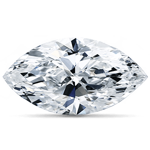
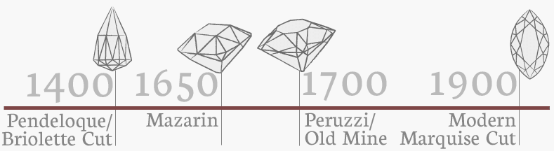

Marquise:
The Marquise Brilliant cut may also be referred to as the "Navette" shape, meaning “little boat,” as the shape of the diamond is said to mirror the hull of a small boat. It is generally comprised of 58 facets, with 33 on the crown and 25 on the pavilion, although the number of pavilion facets may range between 4 and 8. Additionally, Marquise shapes are sometimes cut with a “French tip,” which replaces the large bezel facet at the point with star and upper girdle facets. French tips are also used in the Heart and Pear shapes. Even though the optimal ratio of the Marquise is 2:1, the shape is more traditionally cut to ratios ranging between 1.85 and 2.10 according to personal preference. The Marquise can suffer from a so-called “bow-tie effect” whenlight passing through the diamond casts a shadow across the central facets of the stone. This shadow can be reduced by altering the depth of the pavilion, and adjusting the angles of the table and facets to better diffuse light in the central area. This effect also occurs in the Pear, Oval and Heart shapes.
The shape was then developed and modified throughout the 20th century, evolving into the Marquise Brilliant cut as it is known today, seeing an especial rise in popularity between the 1960s and 1980s. The Marquise cut first appeared in Paris in approximately 1745. The fascinating history of the Marquise cut can be traced back to the height of the French monarchy reign.
